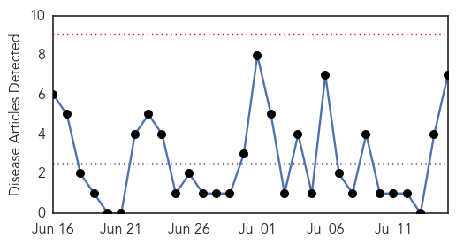
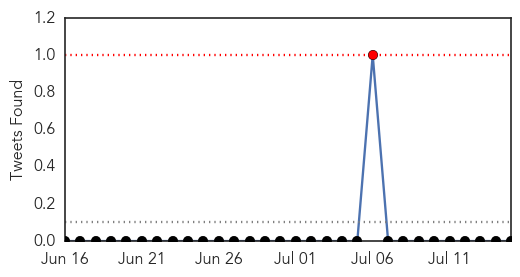
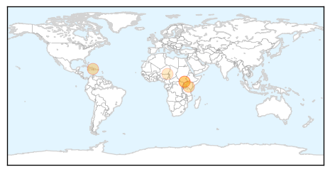
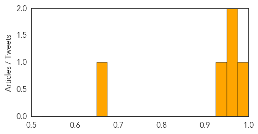

Hepatitis
30-Day Web Trend
0 alerts, 0 warnings

30-Day Twitter Trend
0 alerts, 0 warnings

Article Locations

Article Confidences
Top Articles:
- 0.914
- 6 Vaccinations You Should Get Before Traveling to South Africa
- 0.913
- Hepatitis cases also go viral, 2 from Mumbai
- 0.868
- 20m Nigerians infected with Hepatitis virus-FG
- 0.829
- Only One State Currently Requires HPV Vaccine to Prevent Cancer
- 0.735
- Only Two US States Require HPV Vaccination for Kids
- 0.582
- Health Kalon’s World Hepatitis Day Message
- 0.535
- Only Two U.S. States And The Capitol Require HPV Vaccine Among Young Adults
Top Tweets:
-
No tweets found for Jul 15, 2015
Cholera
30-Day Web Trend
0 alerts, 0 warnings

30-Day Twitter Trend
3 alerts, 0 warnings

Article Locations
Article Confidences
Top Articles:
- 0.984
- Instapundit Blog Archive DISEASE: Haiti’s Unstoppable Cholera Outbreak. “A cholera victim can lose several liters of fluid …
- 0.974
- Kenya : Unilever, Amref enter pact to fight cholera
- 0.956
- Cholera: A New Threat to Health in South Sudan - South Sudan
- 0.937
- EE forms cholera task force
- 0.673
- Niger: critical situation in Diffa as hunger gap and malaria season approach - Niger
Top Tweets:
-
No tweets found for Jul 15, 2015